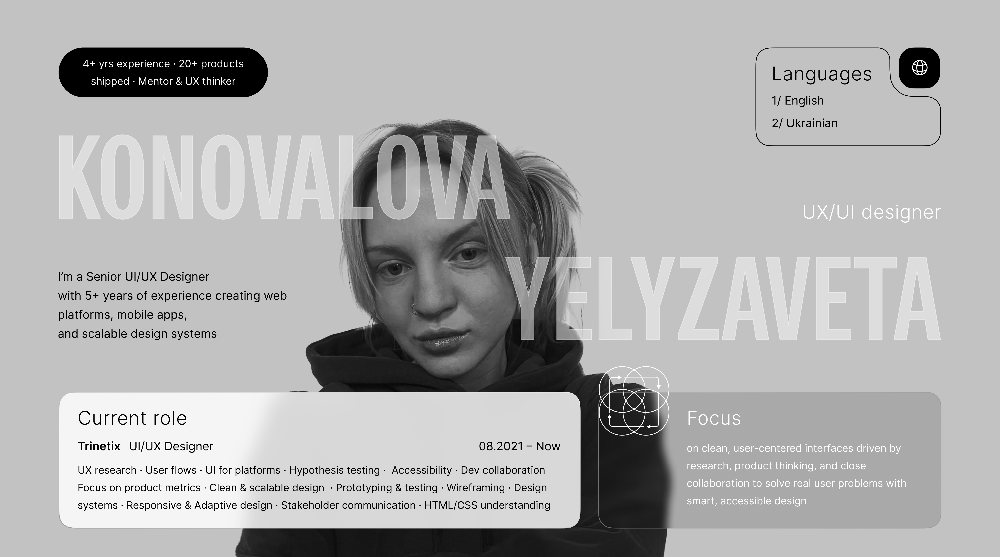

UX Research · UI Design · Design System · User Flows · Prototyping · Dark Theme Design · Hypothesis Testing · Usability Testing · Accessibility
UX Research · UI Design · Design System · User Flows · Prototyping · Client Presentation · Platform UI · Enterprise Dashboard · Accessibility
Design System · User Flows · Prototyping · Dark Theme Design · Hypothesis Testing · Usability Testing · Accessibility
UX Research · Competitor Analysis · In-depth Interviews · CJM · User Flow · UI Design · Prototyping · Adaptive Design · User Stories
UX Research · Competitor Analysis · In-depth Interviews · CJM · User Flow · UI Design · Prototyping · UI Kit · Double Diamond Process · Eco UX
UX Audit · Dashboard Redesign · System Constraints · UI Improvements · Usability Testing · Interaction Design · Performance Optimization · UI Kit
Dashboard Redesign · UI Accessibility · Power BI · Tool Constraints · Visual Design · Usability Testing · Stakeholder Presentation · UI Kit